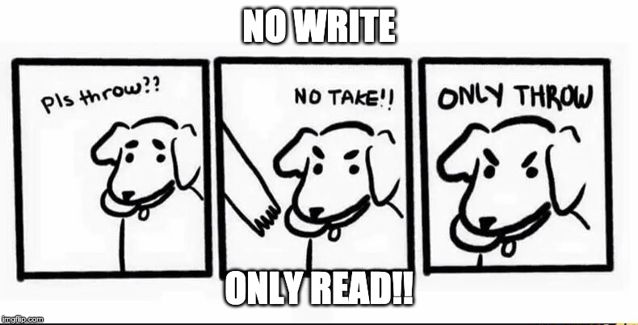
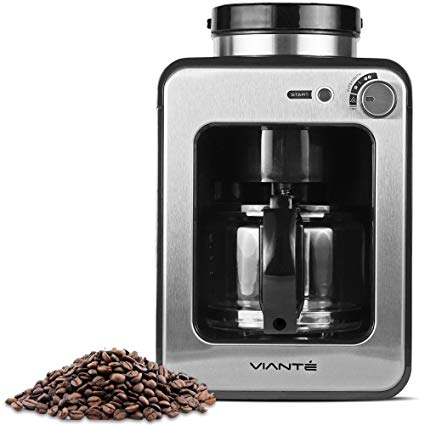

Demystifying Redux

Deepak Jayaram
VT Maple Script


0
Let's look at React..
- UI = fn(State)
- Components internally manage their state
- As applications grow bigger, managing states shared across components becomes a chore
- Confusing to know where a state should live
Simple Counter
overview


Enter Flux
- Application architecture that Facebook uses for building client-side web applications
- Utilizes a unidirectional data flow
- Dispatcher -> Store -> Controller Views -> View

Single source of truth
Single Source of Truth
overview

State is read-only
Actions
overview
Action Creators
Functions that create actions 🤷

Changes are made with pure functions
Pure vs Impure Functions
overview

Reducers
- function(previousState, action) => newState
- "Given a set of inputs, it should always return the same output. No surprises, No side effects. No API calls. No mutations"
- Writing clean reducers result in code that is easy to maintain, test and debug
Reducers
overview


0
- Download Redux Dev Tools Here (opens in a new window)